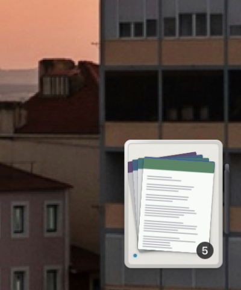
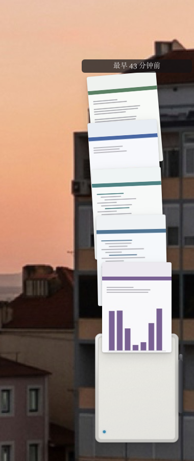
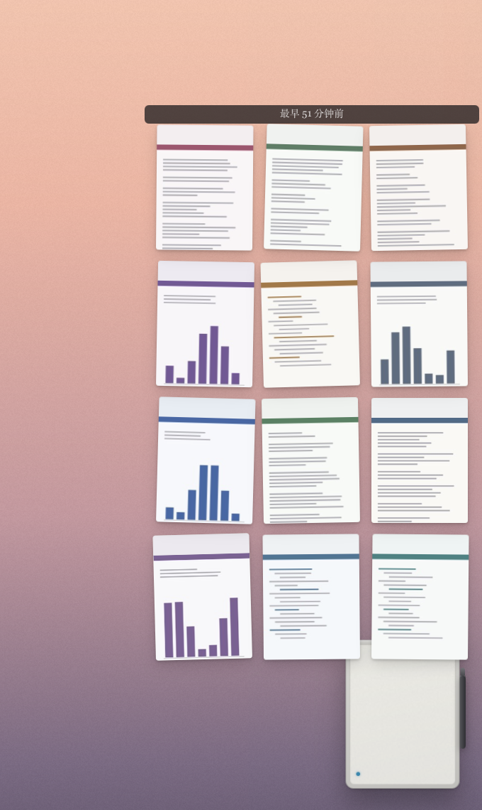

图片先攒着，
什么时候发，你说了算。
一枚停在桌角的迷你 Paper Pro。拖进去的图片先留在那儿——小屏上真的堆着那一叠纸， 厚度就是数量。按住小窗 0.9 秒，整叠一次送走：设备只黑屏一次，不是每张一次。

为什么要攒
往 reMarkable 里塞一份文档，设备要重启一次 xochitl——黑屏 15 到 20 秒。 以前每拖一张就发一次，一个下午拖五张，那块屏就黑五次。代价一直在，只是看不见。
所以拖进去不再等于发出去。图片落进一个待发队列，你随时能看见攒了什么， 按住小窗 0.9 秒，整叠一次送走。一次打扰，换一整叠。

三个手势，一个窗口
没有新按钮，也没有第二个窗口。所有事都发生在那枚 112×148 的小窗上。
拖进来
入队，不发送。不是图片的文件在你松手之前就被摇头拒掉，绝不进队列。
点一下
窗口自己长高，纸从屏幕里散成扇形。再点收回。超过 6 张换成网格。
按住 0.9 秒
屏边一条青色裁切线合拢，小屏预先变暗——松手之前你已经看见后果。


它不会催你
攒了三天没发？它只做一次姿态变化——坐得更低一点，影子更沉一点，然后永远停在那儿。 不闪、不弹、不变色、不加红点。一个每天都在的东西一旦开始催你，你就会把它关掉。
退出 app 也不拦你。队列和缩略图都写在磁盘上，下次打开那一叠还在小屏上—— 厚度自己会说话，不需要一句「你还有 5 张未发送」。
设备不在线时，小屏左下角那个 3 像素的点是空心的；按住时裁切线只走到 35% 就顶住， 蓄不满，就发不出去。用手感拦住，而不是用弹窗。
安静的设置
⌘, 或右键那台小设备。独立的原生窗口，改完失焦即生效，没有「保存 / 取消」。 「检查连接」会对设备的 SSH 端口做一次真实握手，告诉你往返延迟，或者到底哪一步不通。
背景是 macOS 26 的 Liquid Glass。旧系统上自动退回经典材质，不会变成一块灰板。

装它
下载 .dmg，拖进「应用程序」。App 已用 Developer ID 签名，首次打开如果被
Gatekeeper 拦下，右键点「打开」放行一次即可。
设备上需要打开「设置 › 通用 › 存储 › USB 网页界面」，并用 USB 线连接——默认地址固定是
10.11.99.1。
- macOS 11 或更新（Liquid Glass 效果需要 macOS 26）
- Apple Silicon
- reMarkable 2 / Paper Pro，USB 直连，或与电脑同网络（走 ssh 回退）
- 队列存在
~/Library/Application Support/com.zoe.rmbin/，卸载时一并删掉即可
自己构建
git clone https://github.com/JIACHENG135/rm-bin cd rm-bin npm install npm run tauri dev
需要 Rust 和 Node。不要用 sudo——那会把构建产物写成 root 所有，并且让 codesign 读到错误的钥匙串。